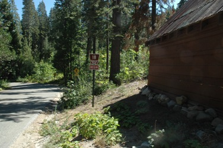
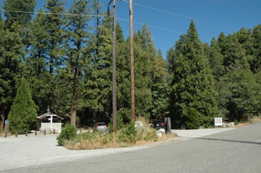
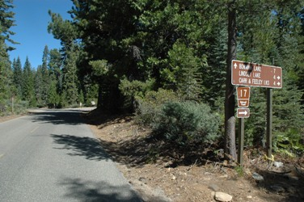
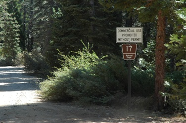

Directions to Grouse Ridge
To get to Carr Lake
Bowman Lake Road (Forest Route 18) starts just east of Bear Valley.

Sierra Discovery Trail is one mile down Bowman Lake Road.

Probably three miles past Sierra Discovery trail on the paved road (18) is the turnoff for Carr & Feeley Lakes road (17).

Fifty feet past this sign, is the actual road.

About three miles up the bumpy gravel road (17), there's a fork. Stay to the right. Then one more mile to the Carr Lake parking lot.
Should take less than a half hour to get to Carr Lake from Sierra Discovery Trail.
Trailhead Scouting

Trailhead at Carr Lake